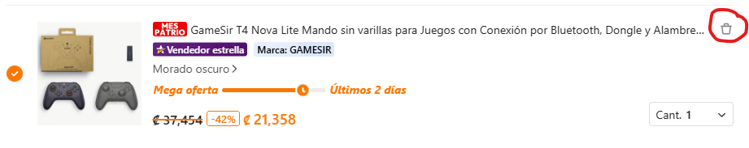
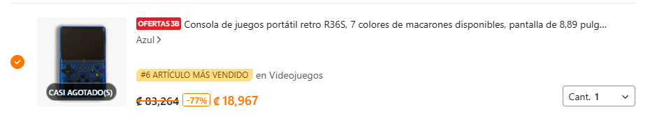
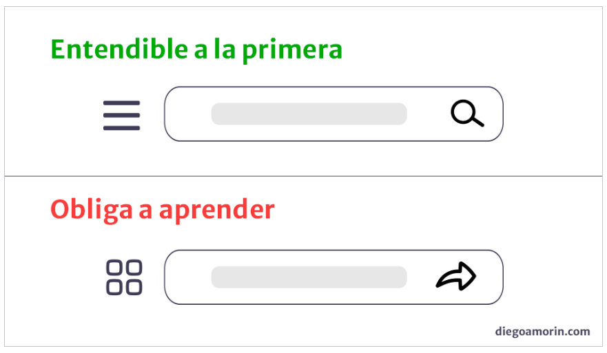
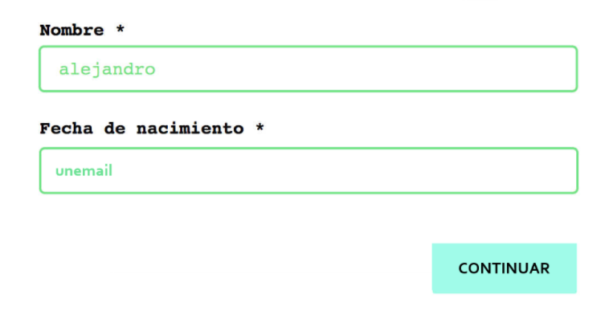
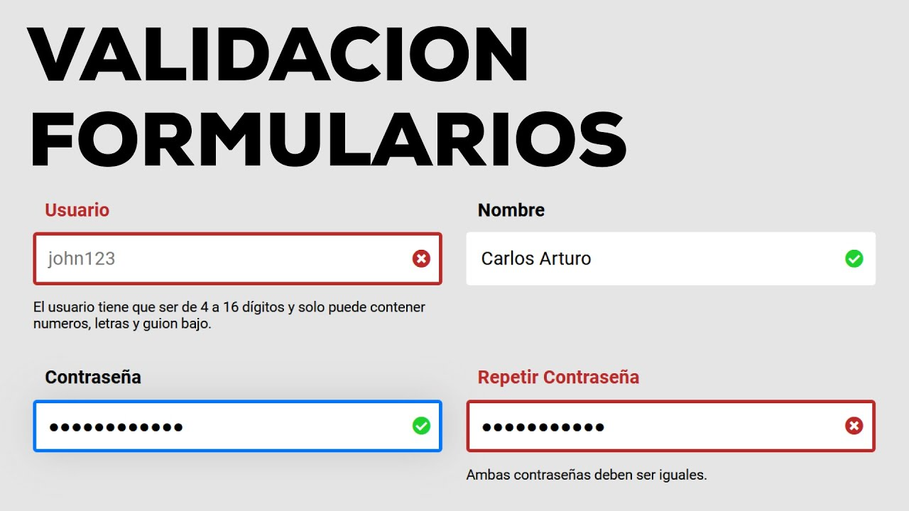
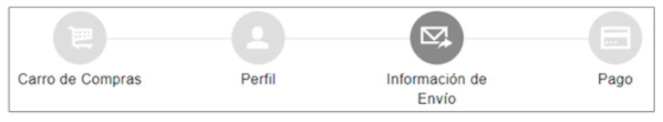

¿Qué es Usabilidad?
La usabilidad web se refiere a la capacidad que tiene un sitio para ser más fácil de usar,
accesible y eficiente para los usuarios. Un sitio con buena usabilidad permite a todos los
demás poder encontrar la información que buscan rápidamente, interactuar con la página
de manera clara y completar tareas sin ningun tipo de problema.
Permite a la navegación ser lógica, los contenidos comprensibles, los botones y enlaces
funcionales y hace que la
interfaz responda de manera predecible. La usabilidad no solo
mejora la experiencia y
satisfacción del usuario, sino que también aumenta la confianza
en el sitio, siendo un factor clave
para el
éxito de cualquier proyecto web.
Importancia de la Usabilidad:
¿Qué es DCU?
DCU es una metodología de desarrollo de productos, aplicaciones o sistemas que prioriza al usuario en
todas las etapas del diseño. Su objetivo es
crear interfaces y experiencias que sean sencillas, eficientes, accesibles, satisfactorias, adaptadas a
las necesidades, habilidades y contexto de
quienes lo utilizan. El DCU se basa en investigar al usuario, entender sus objetivos y limitaciones,
generar prototipos, realizar pruebas de usabilidad
y ajustar el diseño de manera repetitiva. De esta forma, se asegura que los productos funcionen
correctamente, además de también hacer que sean
fáciles de usar y útiles para los usuarios.
Importancia del DCU
Garantiza que los productos, aplicaciones y sistemas sean útiles, intuitivos y accesibles para quienes
los utilizan. Se pone al usuario en el centro del
proceso de diseño, por lo cual se reducen errores, frustraciones y dinero asociado a rediseños debido a
esto, también es importante porque mejora
la satisfacción y eficiencia en la interacción. Además, el DCU permite crear soluciones más adaptadas a
las necesidades reales del usuario, esto
permitiendo aumentar la adopción y fidelidad del producto, aumentando también funcionalidad y facilidad
de uso del mismo.
Principios de Usabilidad
- Visibilidad del estado del sistema:
Este principio establece que el sistema es el encargado de informarle continuamente al usuario sobre lo que ocurre en la web en cada momento,
entonces una buena práctica sería como en la imagen donde se le informa al usuario que hubo una compra exitosa referente a su vehículo, una
mala práctica sería el caso contrario, dondé se realice una compra pero no se le informe al usuario, sino que lo regrese al inicio del sitio. - Relación entre el sistema y el mundo real:
El sistema debe de hablar el mismo idioma que el usuario, esto lo que quiere decir que utilice palabras o frases que le sean similares esto para ganar
más confiabilidad, y generar más interés a la hora de indagar. Las imagenes a continuación son un ejemplo de una buena práctica pues está utilizando
palabras con el acento respectivo de cada país, una mala página sería un sitio web con únicamente un idioma, por ejemplo inglés. - Control y libertad del usuario:
Este principio establece que los usuarios deben tener la posibilidad de deshacer y rehacer acciones fácilmente, ya que al ser humanos nos podemos
equivocar. Un ejemplo de buena práctica sería la primera imagen, pues podemos ver claramente como el usuario tiene la posibilidad de eliminar su
artículo del carrito de compra en caso de haberse equivocado o cambiado de opinión, el caso contrario sería la siguiente imagen pues en esta una
vez que se agregó no puede retirarlo y eso es algo que está mal diseñado pues requeriría volver a iniciar todo el proceso de compra. - Consistencia y estándares:
Este principio indica que los usuarios no deberían preguntarse si distintas palabras, situaciones o acciones significan lo mismo o no. Esto quiere decir
que si un elemento cumple una función en un lugar, debe lucir y comportarse igual en todas partes. La primera imagen es buena práctica pues es el
formato que se ha estado usando en las demás páginas, mientras que la segunda imagen muestra un diseño totalmente diferente, lo cual no
cumple con el principio. - Prevención de errores:
Este principio indica que el sistema debe estar diseñado para que evite en la medida de lo posible que los usuarios cometan errores. Esto significa que
la interfaz debe guiar al usuario con validaciones claras para que no ingrese datos equivocados o ejecute acciones no deseadas. La primera imagen es
una mala práctica porque no contiene validaciones por lo cual permite digitar texto en un campo destinado exclusivamente para fechas, mientras que la
segunda imagen muestra un formulario en el cual se le indica al usuario que está cometiendo errores o bien que faltan algunas especificaciones.+ - Reconocer antes que recordar:
Este principio indica que los usuarios no deberían depender de su memoria para recordar comandos, datos o pasos anteriores al interactuar con nuestra
interfaz. En lugar de obligarlos a memorizar, el sistema debe presentar opciones visibles que faciliten la navegación y la toma de decisiones. La primera
imagen es un ejemplo de una mala práctica porque por ejemplo el icono del birrete podría significar multiples opciones, pero a menos que recordemos que
era es poco probable que queramos entrar ahí, mientras que la segunda imagen es una buena práctica, pues podemos ver claramente donde nos dirigimos. - Flexibilidad y eficiencia de uso:
Este principio establece que los sistemas deben ser flexibles y permitir tanto a usuarios novatos como expertos interactuar eficientemente. Es decir, debe haber atajos (como teclas rápidas o comandos) para los usuarios avanzados, mientras que los principiantes pueden usar menús y ayudas visuales.





